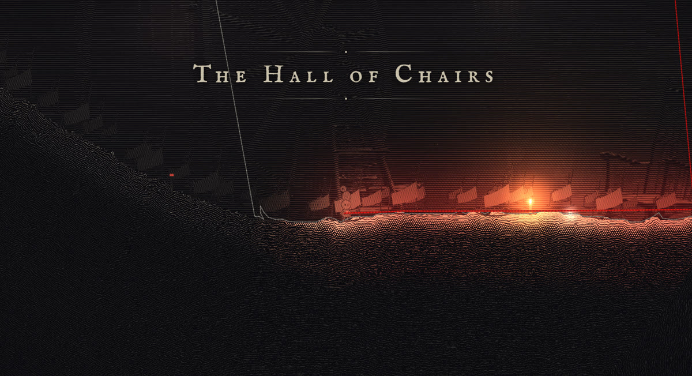
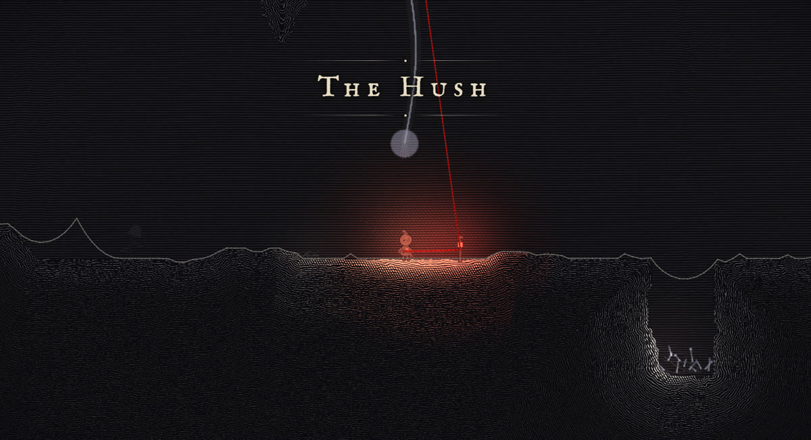
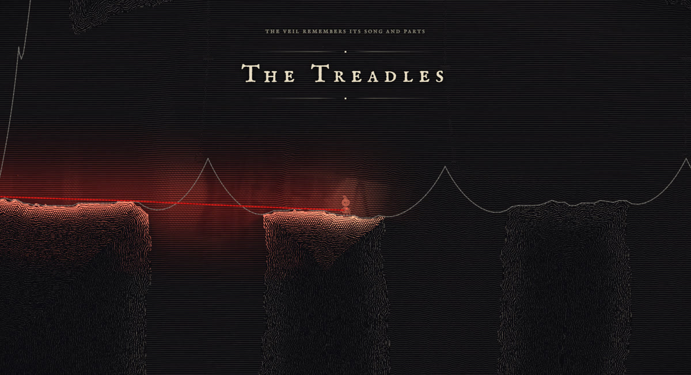
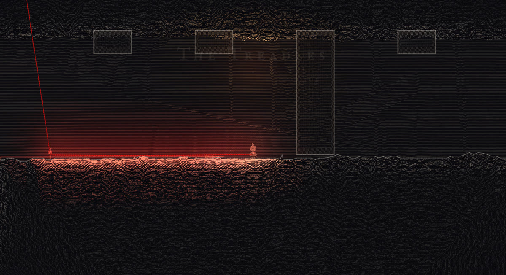
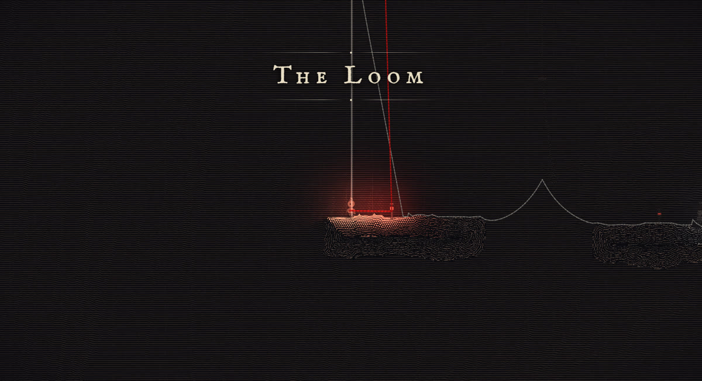

Four new places below the Mereand the Loom is no longer just a room
The world is now twice as deep: 604 m from the cottage to the bottom instead of 304. What used to be the bottom is now the first of four new areas. Each brings its own way of moving or its own danger. Together the route below the Ink Mere is now longer than everything above it, and harder. The Loom is now a real final act with something in it, and there are now two endings.
This page describes places and mechanics only. Who is down there and what happens is sealed at the bottom.
The game is beatable in like 5 minutes. There should be something terrifying in the Loom. You have to make the game much longer and the ending should be better.
| Area | What you do there |
|---|---|
| The Hall of Chairs | The old bottom chamber, rebuilt. Rows of rocking chairs in the dark, one candle, and a hole in the floor: lower yourself down on your thread. |
| The Hush | Black caverns and an 80 m gallery. Things reach out of the walls for anything that stays quiet. Pluck the thread to drive them back; lit bells keep them still; don't linger. |
| The Treadles | Rings that swing on chains over a barbed pit (wait for the ring to come to you). A rope to climb. A corridor of heddle frames that slam to a beat (listen for the creak). Then a long drop, in two stages, down a well. |
| The Loom | A cavern 120 m tall strung with warp threads. Down to its floor, then a climb against the clock: ropes, a long swinging chain, needles that stab across the warp, and something coming up behind you. |





Every new stretch was played with the game's real physics by a scripted player that ties at a pole, then walks, jumps, swings, climbs, plucks and waits. It found real problems that are now fixed:
| Stretch | Result |
|---|---|
| Hall pole → down the hole → first pole of the Hush | passes, 9 s |
| The Hush, plucking as you go, to the Treadles | passes, about 32 s; standing still for 3 s without plucking kills you, plucking keeps you alive |
| Hidden room in the Hush, there and back | passes |
| The three swinging rings | each gap has a window of good release times at most points of the swing; at a bad moment you wait a second for the ring to come back |
| Rope, heddle corridor (timed), the well | passes; running the heddles blindly gets you crushed |
| The Loom: floor to the top with the danger rising | passes in about 55 s with time to spare; also from the mid-climb pole |
| The second ending, start to credits | runs through, with its own cards, credits and a scene after them |
How long it takes now: a perfect scripted run through the new part alone takes about 2.5 minutes of pure movement. The new route is longer and harder than the old game was end to end, and the hands, heddles and the final climb are made to kill you a few times. I'd expect a first playthrough of the whole game to take well over twice as long as before. If you finish it and still find it short, I can go further.
app/src/level.jsThe new areas, poles, rings, ropes, hands, heddles, needles, the rising danger, the new knots and hidden rooms.app/src/deep.js · drawdeep.jsThe rules and the drawing for all of the deep's machinery.app/src/player.jsClimbing ropes and warp threads.app/src/main.jsThe second ending, its cards and the scene after the credits; sounds for the new things; saves stay compatible.docs/STORY.mdThe plot (spoilers).The Hall of Chairs. Forty-one rocking chairs, each with the same grey shawl over it; one candle still burns, by hers, and she isn't in it. Her knot: there are forty-one chairs and every one of them is hers. Every knitter was the same woman, because each doll is made in the image of the one who made it.
The Hush. The walls are packed cloth, and the hands in them are knitted. The knot here is the wrong voice again, and it tells you not to pluck. It is trying to get you killed.
The Treadles. A faded red thread lies along the ledge: a doll's thread from seventy winters ago. The knot in it isn't her voice but an older woman's, the knitter before her, saying word for word what the knitter will say to you at the end. The ending is a script, and it has been said forty-one times.
The Loom. Its floor is woven cloth, and the cloth is faces, all the same face: hers. The chorus (many of her voices at once) tells you to sit down and be still. When you step off the pole on the cloth, the cloth heaves up into one vast figure with her face, the Weaver, and rises after you while you climb the warp. At the top she sits woven in to the waist, her candle beside her, with the grey thread in her hands. She is the model you chose, rendered into the game's engraving.
Two endings. Tie the threads is the old ending, the cycle going on. Bite through her thread is new. "Oh... oh, little one. It's so quiet." The Weaver stops and sinks, and the faces close their eyes. Her candle goes out. Then something below takes hold of the red thread, the last line to the surface, and the doll bites through its own thread too. The light goes out. Cards: that winter no name was called up the well; in the spring the snow on the Brink began to melt. After the credits: the doll sitting in her place in the dark, and the sound of needles.